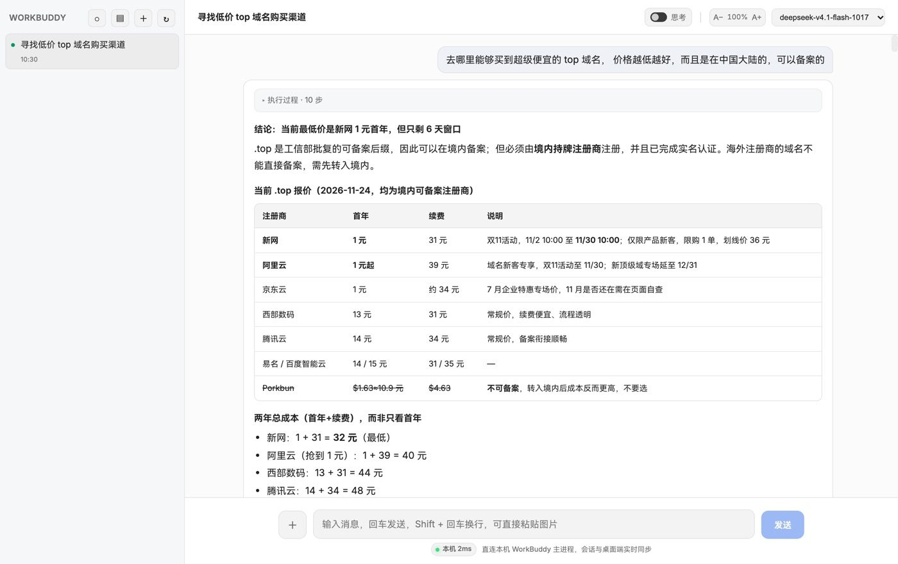

开源 · MIT · 不联网中转
官方的远程只有手机和平板，桌面端始终没有「连另一台电脑」这个入口。
这个项目补的就是这一格。
$ curl -fsSL https://raw.githubusercontent.com/hacksmo/workbuddy-remote/main/install.sh | bash上面那行命令装在被控端（装着 WorkBuddy 的那台）。用来连的那台什么都不用装。
左边那个界面，原样出现在右边的浏览器里。同一个会话、同一份队列、同一个进度。
被控端跑一条命令，起来就是可访问的地址。
控制端有浏览器就行，不用装 WorkBuddy，也不用装 Node.js。
同网段自动走近路，实测比绕公网快 287 倍。
长回答往上滚只补新内容，不整段重传。
就是装着 WorkBuddy 的那台机器。一条命令装完。
终端把所有能用的地址列出来，每条都带着密码。启动时会重启一次 WorkBuddy。
复制「同网段直连」那条地址，粘进浏览器。完事。
不在同一个网里 —— 在家连公司、在客户现场连自己的机器 —— 用 ./scripts/tunnel.sh 走反向隧道，几行配置的事。
发消息、看思考过程、读长回答，Markdown 和代码块都正常。会话列表按空间分组，模型下拉框、中断、粘贴图片、预览面板都在原位 —— 因为它渲染的就是桌面端的界面。

远程桌面传的是整屏像素。这个项目不搬像素，直接把界面开给你。
很多远程工具把消息先存在浏览器里，等回复结束再发。后果是你排在队里的消息，坐在那台机器前的人完全看不到。这里排队走 WorkBuddy 自己的队列 —— 你在这台排的三条，回工位打开桌面端，它们还在队列里等着。
用反向隧道而不是内网穿透。公司和运营商的网络通常只拦「外面连进来」，不拦「里面连出去」。把方向反过来，就不用跟 NAT 类型较劲。页面数据是增量推送的。
默认监听局域网，但没有密码进不来。密码自动生成，存在本机、权限 600。介意同网段可见就 WB_LAN=0，只留隧道。
需要 macOS / Linux 的只是被控端。你用来连的那台，Windows、Mac、Linux 都行，有浏览器就能用，不用装运行环境。
它依赖桌面端留的一个调试入口。官方哪天封掉这个入口，或者自己补上了桌面版远控，这个项目就该退场了 —— 它是补丁，不是官方功能。
另外，设置里那个也叫 WorkBuddy Remote 的插件是官方内置的，给手机远控做授权，走官方云端通道。和这个项目同名，但没关系，两者互不影响。